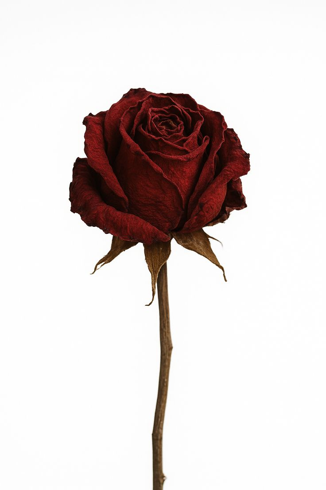
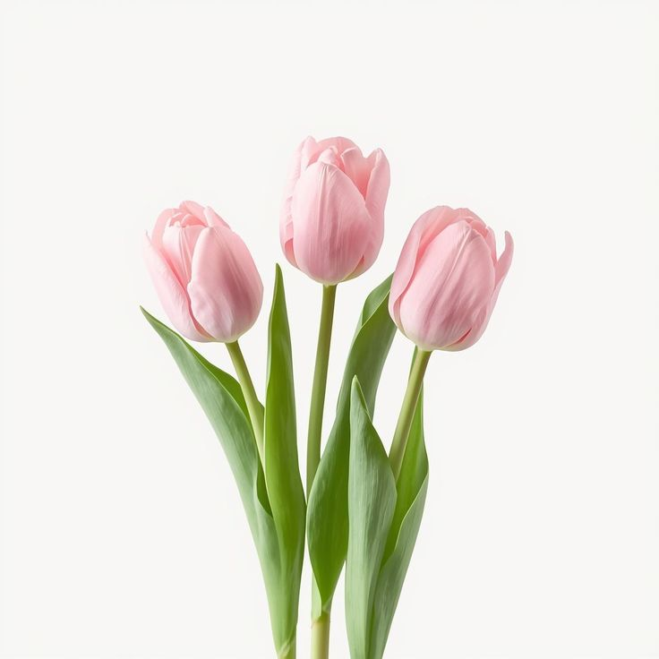
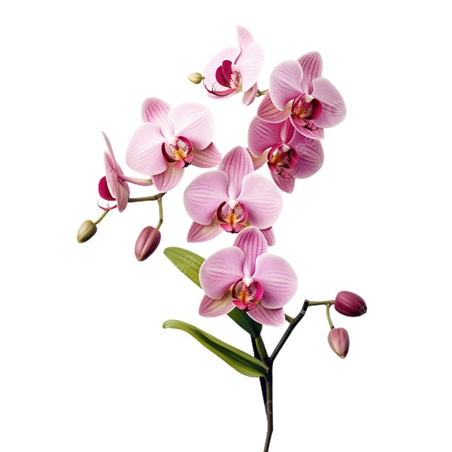
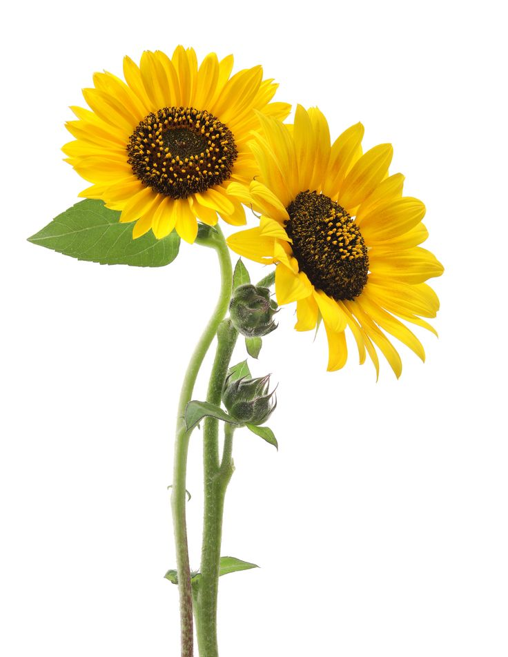
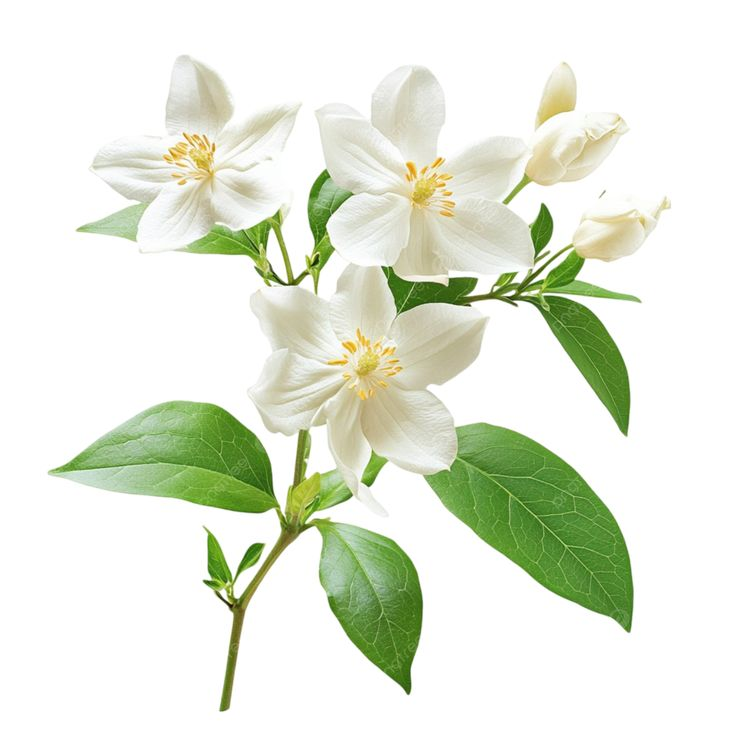
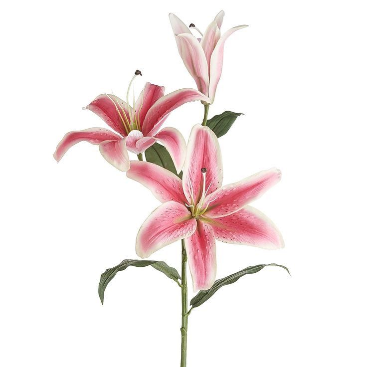
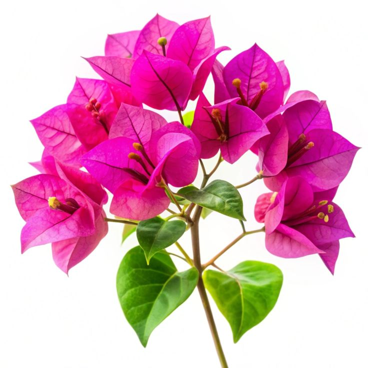
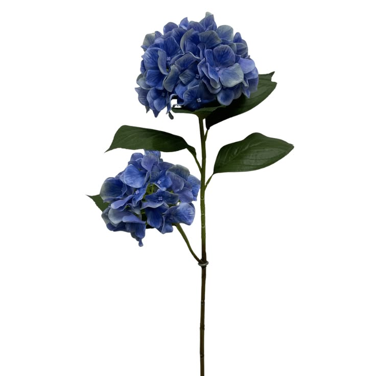
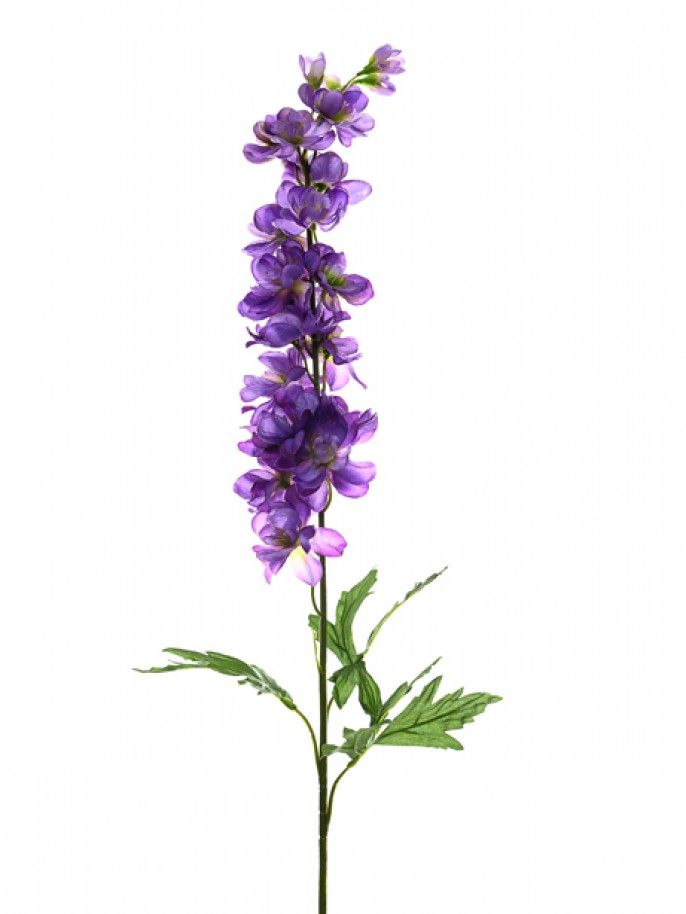
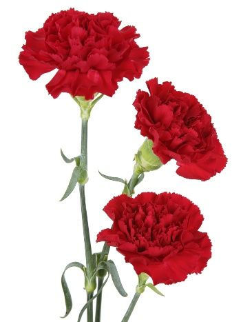

وردة كلاسيكية طبقاتها متكاثفة ، ورائحتها فواحة تُستخدم في العطور

وردة تشبه الكأس ، متعددة الألوان وتستمر في النمو بعد القطف

زهرة فريدة بتصاميم متناظرة ، تدوم أزهارها لأسابيع

زهرة كبيرة بقرص واسع وبتلات صفراء ، تتجه دائماٌ نحو الشمس

أزهار بيضاء نجمية صغيرة ، برائحة عذبة تشتد فواحتها في الليل

بتلات كبيرة بوقيات المظهر ، تتميز برائحتها النفاذة ونقاطها الداخلية الناعمة

بتلات شمعية متداخلة بألوان دافئة ، ورائحة استوائية منعشة

كرات كبيرة متجمعة من الأزهار، يتغير لونها حسب حموضة التربة

سنابل بنفسجية رفيعة ، بعبير عطري هادئ يساعد على الاسترخاء

بتلات كثيفة ومجعدة الأطراف ، وتعد من أكثر الورود صمودا بعد القطف